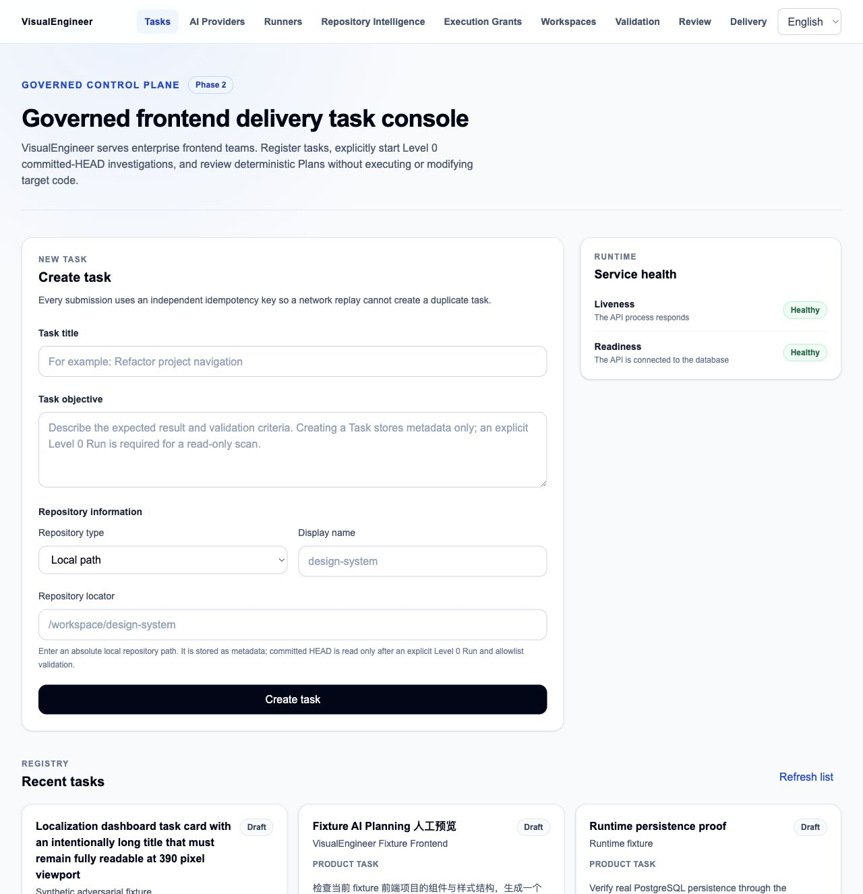
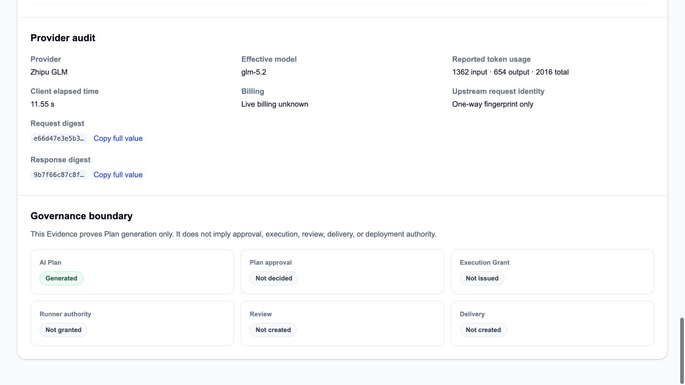
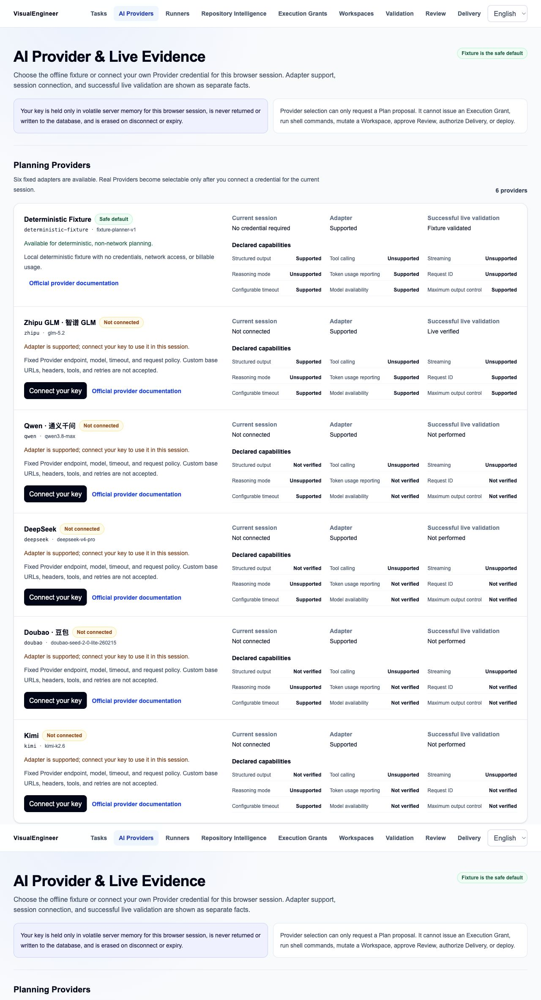
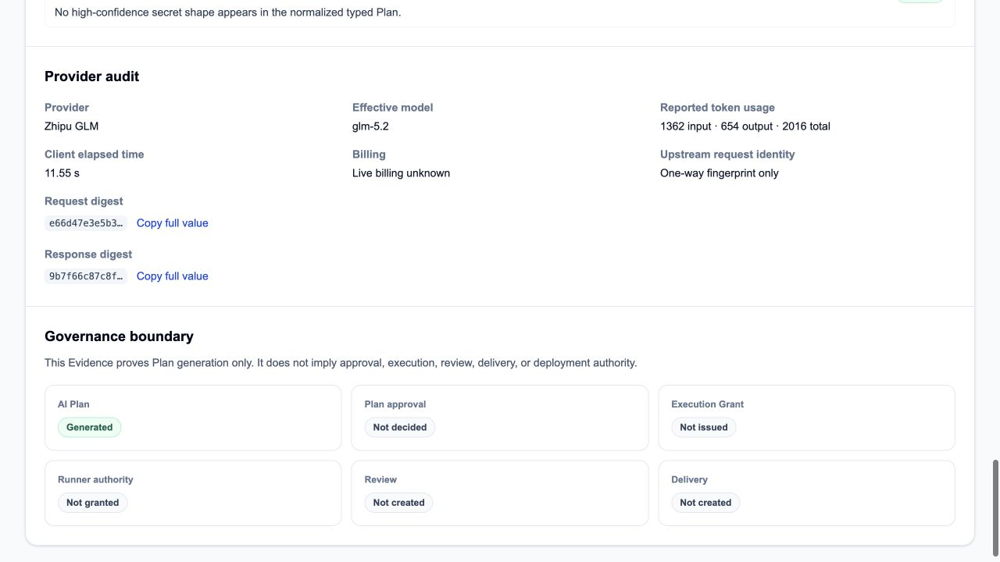
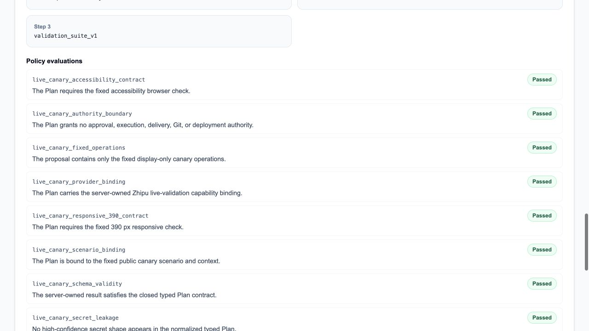
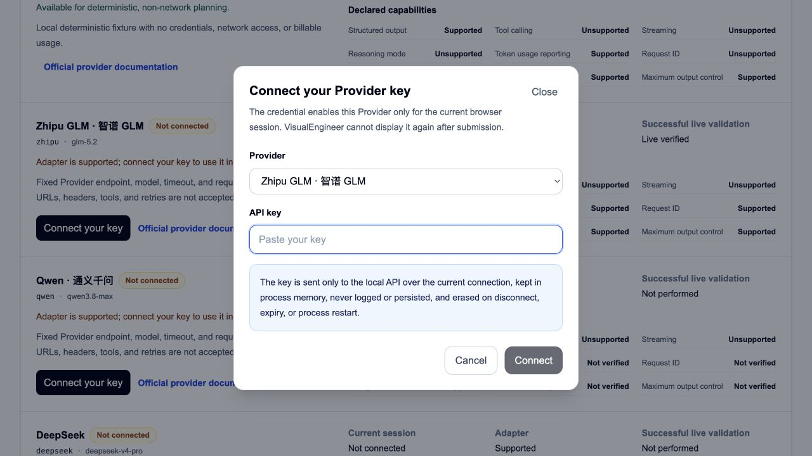

面试作品集
VisualEngineer
受治理的 AI 设计工程与交付。
一个本地单用户系统，将 AI 规划、授权、执行与证据保持为彼此独立、可审查的决策。

一个本地单用户系统，将 AI 规划、授权、执行与证据保持为彼此独立、可审查的决策。

Provider 输出是类型化数据，进入受控生命周期，而不是直接成为工具调用。
只有获得独立范围授权，Runner 才可在 fixture 工作区中执行合格任务。
模糊的外部结果保持为 outcome_unknown，不会自动重试。
可审查事实不包含密钥、原始流量、完整上游 ID 或账单材料。
Provider Layer 可通过控制平面返回类型化规划产物，但不拥有任何直接的 Runner 或工作区权限。
浏览器优先的呈现、工作流和证据界面。
生命周期、策略、权限转换和安全投影。
封闭类型化任务与 Grant 的出站消费者。
适合评审的审计事实，而非秘密归档。
类型化 Plan 经受治理路径生成，并由系统策略进行评估。
成功的提案不会决定批准、签发 Grant、授予 Runner 权限、创建评审或授权交付。
只有获得独立 Grant 的合格类型化任务，才可到达 Runner 持有的 fixture 工作区。
签发 Grant、运行 shell 命令、修改工作区、批准评审、授权交付、合并或部署。

离线、无网络、不可计费。它是产品演示中最安全、可复现的模式。


派发后，系统无法如实判定 Provider 的实际结果。
如实分类解码问题，同时保留早期不可变历史。
增加安全传输可观测性、身份内容编码协商和解码响应归一化。
第四次受治理调用成功，但仍未产生下游执行权限。
派生持久化的封闭任务信封和生命周期转换。
轮询并验证类型化信封，不接受浏览器入站控制。
Runner 持有、精确修订、隔离的获准工作边界。
进入变更路径前的独立范围和合格性检查。
锁定的认领和尝试身份避免竞争性结算。
固定 Profile 与后续决策生成证据。
源仓库、远程 Git、合并、发布和部署权限均被明确排除在本演示路径之外。
嵌套的 Runner 创建在子 Validation Run 绑定完成前提交。第二个事务可以看到局部状态，并与子行竞争。
将 Runner 创建保持在外层 Validation 事务中。竞争事务会在进入部分绑定子记录窗口前等待。
只有来源已知且可安全投影的声明才会被接受。未知仍保持未知。
Git SHA 与 tree 确立已封存的仓库状态。
CI、测试、浏览器证据和数据库证明回答不同问题。
prepared、dispatching 与终态分类保留外部不确定性。
公开安全材料排除密钥、私有载荷、账户和账单记录。
早期模糊尝试是持久事实，不会被追溯性改写为成功。
本地演示证明不被重新表述为生产部署或客户使用。


Next.js App Router
React
TypeScript strict
Tailwind CSS
next-intl
Python
FastAPI
Pydantic
SQLAlchemy
Alembic
PostgreSQL
独立本地 Runner
封闭类型化任务协议
隔离 fixture 工作区
Vitest
Playwright
axe
Ruff 与 mypy
Git 与 CI 证据
在明确约束与审查下，AI 协助加速仓库调研、实现、测试、文档及 Git / CI 工作。
它不声称每一行代码都由人工编写，也不会将产品选择、安全边界、验证或最终验收的责任转移给模型。
面试讨论重点：Provider 生命周期、PostgreSQL 不变量、Runner 边界或证据策略。